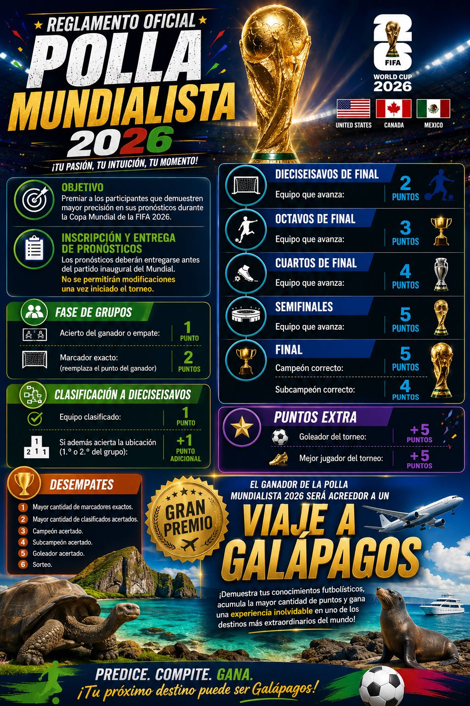

Fase de grupos
- Acierto del ganador o empate: 1 punto.
- Marcador exacto: 2 puntos.
- El marcador exacto reemplaza el punto del ganador.
Registra tus predicciones, compite con tus amigos y sube en el ranking.
Ingresa con tu correo institucional UPS para revisar o completar tus pronósticos.
¿Todavía no tienes una cuenta?
Regístrate con tu correo institucional para participar en la polla.
Después de registrarte, revisa tu correo y confirma tu cuenta antes de guardar predicciones. Recuerda revisar el correo no deseado (SPAM).
¿Ya tienes una cuenta?
No has iniciado sesión.
Completa tus marcadores y guarda tu polla antes del inicio del Mundial.
Polla Mundialista 2026
📢 Importante Recuerden que los pronósticos deben ingresarse como máximo hasta el jueves a las 14:00, antes del partido inaugural. Después de esa hora ya no se podrán registrar ni modificar los pronósticos correspondientes.

Premiar a los participantes que demuestren mayor precisión en sus pronósticos durante la Copa Mundial de la FIFA 2026.
Los pronósticos deberán entregarse antes del partido inaugural del Mundial. No se permitirán modificaciones una vez iniciado el torneo.
Equipo que avanza: 2 puntos.
Equipo que avanza: 3 puntos.
Equipo que avanza: 4 puntos.
Equipo que avanza: 5 puntos.
Si las posiciones oficiales de un grupo son: 1.º Ecuador y 2.º Alemania, y el participante acierta ambos clasificados con sus posiciones correctas, obtiene 4 puntos:
Guía rápida para registrar correctamente tu polla mundialista.
Ingresa con tu cuenta habilitada o regístrate con correo y contraseña. Si usas registro por correo, revisa tu bandeja de entrada y confirma tu cuenta.
En la pestaña Fase de grupos, escribe el marcador que pronosticas para cada partido. Con esos resultados, la aplicación calculará automáticamente las posiciones de cada grupo.
Luego de llenar tus marcadores de grupos, entra a Eliminación directa y presiona “Recalcular llaves con mis pronósticos”. Así se cargan los cruces de dieciseisavos según tus propios resultados.
Ingresa los marcadores de dieciseisavos, octavos, cuartos, semifinales y final. Si un partido termina empatado, debes seleccionar el equipo que avanza.
En la parte superior de Eliminación directa, escribe tu pronóstico para goleador del torneo y mejor jugador del torneo.
Cuando termines, presiona “Guardar todos mis pronósticos”. La aplicación guardará tus marcadores, equipos que avanzan, goleador y mejor jugador.
Cuando tus datos se guarden correctamente, verás un mensaje de confirmación. Además, al volver a entrar con tu cuenta, tus marcadores, equipos que avanzan, goleador y mejor jugador se cargarán automáticamente en sus respectivos campos.
Cargando partidos de grupos...
Estos datos también forman parte del reglamento y se guardan junto con todos tus pronósticos.
Cargando eliminación directa...
El ranking estará disponible cuando se registren resultados.